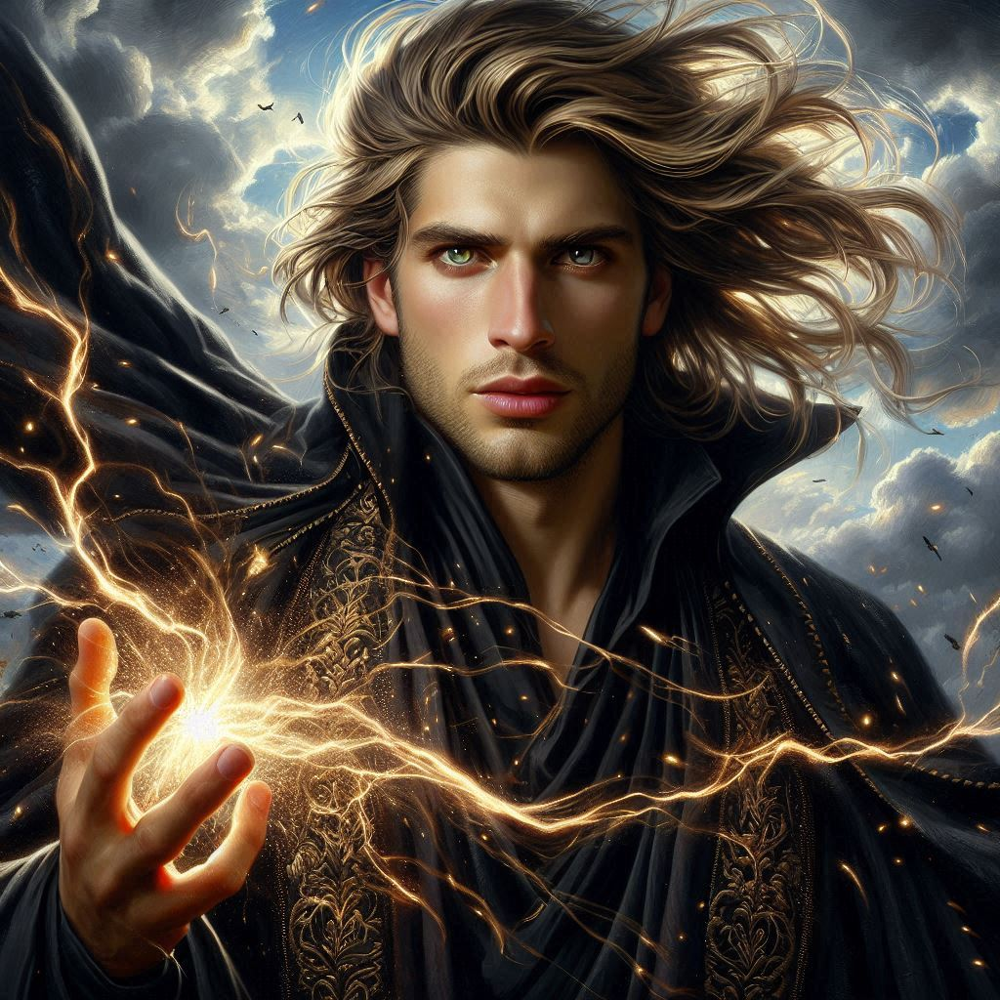
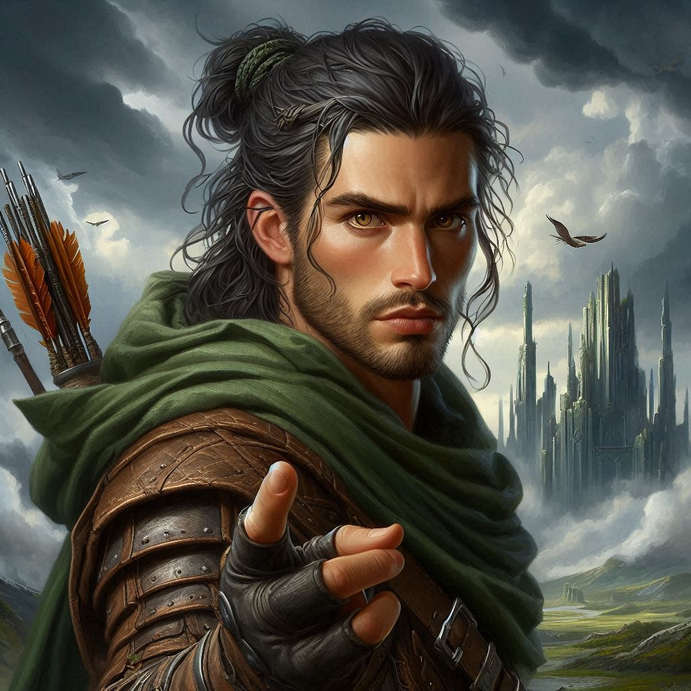

The Betrayer's Return
The air around you feels heavy with tension as the dark elves begin their eerie chant. You stand frozen, recalling your lessons about the ancient language of magic—the very language spoken by the elves who once thrived in harmony with nature. You can feel its resonance deep within your veins, a half-remembered melody that stirs your heritage as a half-elf. You take a deep breath and summon your courage, speaking in elvish, your voice steady and clear.
To your astonishment, the ancient runes etched into the temple walls respond to your words, glowing with an ethereal light. They pulsate rhythmically, a shimmering protective barrier forming around you and Elias. The dark elves pause, their chant faltering as the magic you’ve invoked pushes against their dark incantations.
But your relief is short-lived. The dark elves quickly regain their focus, their voices rising in unison once more, and you can feel the protective shield beginning to falter. The runes flicker ominously, and a chill runs down your spine. You glance at Elias, who stands beside you, sword drawn and muscles tense. The fear in his eyes mirrors your own—this spell may not hold for long.
“Kira,” Elias says, his voice low and urgent, “we can’t hold them off forever.”
You feel the weight of his words, the desperation in his tone. He’s right. The protective shield is weakening, and once it’s gone, you’ll be vulnerable to the dark elves’ deadly magic. Your heart races as you rack your mind for a solution, but before you can act, the air suddenly shifts.
A powerful gust of wind sweeps through the temple, extinguishing the glow of the runes. The dark elves hesitate, their chanting disrupted, as if something—or someone—has interrupted the flow of their magic. You whirl around, your breath catching in your throat as you see him.
Jorsh.
He explodes from the shadows, his dark cloak billowing behind him, his eyes gleaming with an intensity you haven’t seen before. He’s no longer the boy you once knew—he’s something else now. More dangerous. More powerful. The air around him hums with magic, a force you can’t quite understand.
With a flick of his wrist, Jorsh sends a wave of energy through the air, driving back the dark elves. They scatter, their chanting broken, their formation in disarray. You can feel the force of his power, the same power that once fascinated you—power that now fills you with equal parts awe and fear.
“Kira,” Jorsh says, his voice soft but commanding. He steps closer, his gaze locking onto yours. “I knew you would come.”
Your heart skips a beat. For a moment, the temple, Elias, and the dark elves fade into the background, and it’s just the two of you, standing in the middle of a storm of magic. His presence is magnetic, drawing you in despite everything you’ve seen, everything you’ve heard.
“Jorsh...” you whisper, your voice trembling. You take a step back, unsure of how to feel. The boy you once cared for is still there, hidden beneath layers of power and darkness—but so is something else. Something dangerous.
“Look at what we could do together,” Jorsh continues, his eyes filled with conviction. “You see it now, don’t you? The power of the dark elves—the magic of this realm. It could be ours, Kira. We could rule this world together. Protect Belladonna. No one would ever stand against us.”
Your heart races as his words sink in. It’s everything you once wanted—to protect your home, to be powerful enough to change the world. But there’s a darkness in his offer, a dangerous allure that you can’t ignore.
“Kira, don’t listen to him,” Elias snaps, stepping forward. His voice is sharp, his eyes filled with anger. “He’s manipulating you. He’s not the same person you knew.”
You glance at Elias, your chest tightening. You can see the hurt in his eyes, the betrayal. He’s always been there for you, and now, in this moment of decision, he’s begging you not to fall for Jorsh’s promises.
But Jorsh isn’t done. He takes another step closer, his voice dropping to a low, intimate tone. “The Minister of Trade is seeking the same power. He’s not just a threat to me—he’s a threat to everything. If we don’t act, he’ll control the dark elves’ magic and use it to destroy everything we care about. I need you, Kira. Together, we can stop him.”
The words hang in the air, heavy with consequence. Jorsh extends his hand to you, his gaze piercing into yours. He’s offering you a chance—to join him, to embrace the power you’ve always been afraid to claim. But Elias’ warning echoes in your mind, reminding you of the dangerous path Jorsh has chosen.
You stand at a crossroads, the weight of your decision pressing down on you. Jorsh, the boy you once loved, is offering you power beyond imagination. But you’ve sworn to stop him, and Elias, who has always stood by your side, is counting on you to do the right thing.